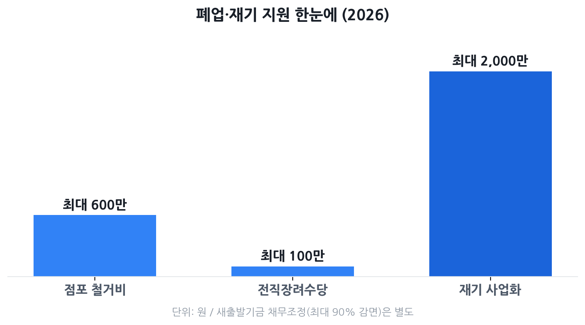

폐업 후 받을 수 있는 지원 총정리 2026
— 희망리턴패키지·새출발기금·구직급여·노란우산
폐업을 결심하거나 이미 가게 문을 닫은 자영업자라면 "이제 뭘 받을 수 있지?"가 가장 막막할 겁니다. 결론부터 말하면, 아는 사람은 수백만 원~수천만 원을 챙깁니다. 점포 철거비 최대 600만 원, 취업 시 전직장려수당 100만 원, 채무 원금 최대 90% 감면, 구직급여까지 — 2026년 현재 기준으로 단계별로 정리했습니다.
- 폐업을 고민 중이거나 막 폐업한 소상공인·자영업자
- "폐업하면 받을 게 있긴 한가?" 막막함을 느끼는 분
- 점포 철거·채무·재취업·재창업을 한꺼번에 정리하고 싶은 분
- 자영업자 고용보험이나 노란우산공제에 가입해 둔 분

폐업 지원 전체 그림 — 무엇을 받을 수 있나
폐업 관련 지원은 크게 네 축으로 나뉩니다. ①사업 정리·점포 철거 지원, ②채무 조정, ③소득 보전(구직급여), ④재기(재창업·취업) 지원입니다. 각각 운영하는 기관과 신청 창구가 다르기 때문에, 내 상황에 맞는 것을 먼저 파악해야 빠짐없이 챙길 수 있습니다.
| 지원 제도 | 주요 혜택 | 운영 기관 | 신청 창구 |
|---|---|---|---|
| 희망리턴패키지 | 점포철거비 최대 600만 원 전직장려수당 최대 100만 원 재창업 자금 최대 2,000만 원 |
소상공인시장진흥공단 | 소상공인24 (sbiz.or.kr) |
| 새출발기금 | 채무 원금 최대 60~90% 감면 또는 연 3~4%대 저금리 전환 |
한국자산관리공사(캠코) | 새출발기금.kr |
| 자영업자 구직급여 | 기준보수의 60%, 최대 210일 (1일 상한액 84,000원) |
고용노동부·근로복지공단 | 고용24 (ei.go.kr) |
| 노란우산공제금 | 납입금+복리이자 전액 수령 퇴직소득 과세로 절세 |
중소기업중앙회 | 노란우산공제 (8899.or.kr) |
희망리턴패키지 — 폐업 단계별 지원 4종
희망리턴패키지는 소상공인시장진흥공단이 운영하는 폐업 전후 종합 지원 프로그램입니다. 2026년 현재 크게 네 가지 메뉴로 구성되어 있으며, 각각 따로 신청할 수 있습니다.
① 사업정리컨설팅
폐업 예정 소상공인에게 전문 컨설턴트가 임대차 계약 정리, 잔여 재고 처분, 행정 절차 등을 1:1로 안내해 줍니다. 무료로 제공되며, 법률·세무·채무조정 연계 상담도 받을 수 있습니다.
② 점포철거비 지원
임차 점포를 원상복구해야 할 때 드는 철거 비용을 지원합니다. 2025년 7월 11일 이후 폐업자 기준 최대 600만 원(전용면적 3.3㎡당 20만 원)까지 지원받을 수 있습니다. 기존 한도(400만 원)에서 대폭 상향된 것입니다.
③ 전직장려수당 (취업 지원)
사업을 정리하고 취업 전환을 선택한 소상공인에게 지급하는 응원금입니다. 총 100만 원이며 두 단계로 나뉩니다.
- 1차 60만 원: 전직 심화교육을 수료하거나 취업에 성공했을 때
- 2차 40만 원: 취업 후 30일 이상 근속을 증명했을 때
④ 재기사업화 지원 (재창업)
다시 창업에 도전하려는 폐업 소상공인에게 사업화 자금을 지원합니다. 최대 2,000만 원(정부 지원금 70% + 본인 자부담 30% 구조)이며, 평가 결과에 따라 최소 1,400만 원~최대 2,000만 원으로 차등 지급됩니다. 별도 교육 프로그램도 함께 운영됩니다.
신청 방법
소상공인24(www.sbiz.or.kr) 또는 희망리턴패키지 전용 누리집(hope.sbiz.or.kr)에서 비대면 신청할 수 있습니다. 점포철거비와 원스톱폐업지원은 예산 소진 시까지 상시 접수하며, 재기사업화 자금은 연 2~3회 모집 공고가 나옵니다. 자격 요건은 만 15~69세, 60일 이상 운영한 사업자입니다.
새출발기금 — 채무조정으로 재기 발판 마련
새출발기금은 한국자산관리공사(캠코)가 운영하는 소상공인·자영업자 전용 채무조정 프로그램입니다. 2022년 출범 이후 지속 확대되어, 2026년 현재 최대 15억 원(담보 10억 원 + 무담보 5억 원)의 채무를 조정해 줍니다.
신청 대상
- 2020년 4월~2025년 6월 사이 사업을 영위한 개인사업자 또는 법인 소상공인
- 부실차주: 90일 이상 연체된 차주
- 부실우려차주: 90일 미만 연체 또는 단기간 내 연체 우려가 있는 차주
- 폐업 후에도 신청 가능 (단, 폐업 법인은 불가)
채무조정 내용
| 구분 | 부실우려차주 (단기 연체) | 부실차주 (90일 이상 연체) |
|---|---|---|
| 금리 조정 | 연 3~4%대 고정금리로 전환 | - |
| 원금 감면 | 순부채 60~80% 감면 (기초수급자 등 취약계층 최대 90%) |
원금 최대 60~90% 감면 (소득·자산 심사 기반) |
| 상환 기간 | 최대 10년 (취약계층 20년) | 최대 10년 (취약계층 20년) |
| 거치 기간 | 최대 1년 (취약계층 3년) | 최대 1년 (취약계층 3년) |
신청 방법
새출발기금 공식 누리집(새출발기금.kr 또는 newstartfund.or.kr)에서 온라인 신청이 가능합니다. 접수 즉시 추심이 중단되며, 평균 2~3주 내 채무조정 결과를 받을 수 있습니다. 신용회복위원회 중개형으로도 신청할 수 있습니다.
자영업자 고용보험 — 폐업 후 구직급여
직장인에게 실업급여가 있다면, 자영업자에게는 자영업자 고용보험 구직급여가 있습니다. 임의가입 제도라 미리 가입·납부한 경우에만 수급할 수 있지만, 가입해 두었다면 폐업 후 큰 버팀목이 됩니다.
수급 자격
- 폐업일 전 24개월 내 자영업자 고용보험 피보험 기간 1년 이상
- 폐업 사유가 적자·매출 감소 등 비자발적 사유에 해당할 것
- 구체적 기준: 6개월 연속 적자, 또는 폐업 직전 3개월 평균 매출이 전년 동기 대비 20% 이상 감소, 또는 3분기 연속 매출 감소 추세 중 하나 해당
- 근로 의사와 능력이 있음에도 취업하지 못한 상태
지급액과 기간
| 가입 기간 | 지급 일수 | 지급액 (기준보수의 60%) |
|---|---|---|
| 1년 이상 ~ 3년 미만 | 120일 | 1등급(기준보수 182만 원): 월 약 109만 원 7등급(기준보수 338만 원): 월 약 203만 원 1일 상한액: 84,000원 |
| 3년 이상 ~ 5년 미만 | 150일 | |
| 5년 이상 ~ 10년 미만 | 180일 | |
| 10년 이상 | 210일 |
노란우산공제 — 폐업 시 공제금 수령
노란우산공제는 중소기업중앙회가 운영하는 소기업·소상공인 전용 공적 공제 제도입니다. 사업 중에는 소득공제 혜택(2026년 기준 연 최대 600만 원)을 받고, 폐업·사망·노령 등 법정 사유 발생 시 납입 원금과 복리이자를 한꺼번에 받을 수 있습니다.
폐업 시 공제금 특징
- 전액 지급: 폐업은 법정 공제사유이므로 불이익 없이 적립액 전액 수령
- 퇴직소득 과세: 폐업 공제금은 종합소득세가 아닌 퇴직소득 방식으로 과세되어 세 부담이 낮음
- 월 5만~100만 원 범위에서 자유롭게 납입, 복리(연 2.1% 내외) 이자 적립
- 2026년 기준: 납입 한도가 연 1,800만 원으로 상향, 50개월 상한 폐지
수령 방법
노란우산공제 공식 홈페이지(8899.or.kr) 또는 가까운 중소기업중앙회·은행 창구에서 신청합니다. 폐업일 기준 서류(사업자등록 폐업 확인서 등)를 함께 제출하면 됩니다.
놓치기 쉬운 함정 5가지
- ① 점포철거비 폐업일 기준 확인 필수. 2025년 7월 11일 이전 폐업자는 최대 400만 원, 이후 폐업자는 최대 600만 원입니다. "올해 폐업했으니 600만 원"이라고 착각하지 말고 정확한 폐업 날짜를 확인하세요.
- ② 고용보험 미가입이면 구직급여 불가. 자영업자 고용보험은 임의가입입니다. 가입 없이 폐업하면 구직급여를 한 푼도 받지 못합니다. 폐업을 고민 중이라면 지금이라도 가입해 1년을 채우는 방향을 고려하세요.
- ③ 새출발기금은 '부실우려' 단계에서 더 유리합니다. 이미 90일 이상 연체된 부실차주가 되면 선택지가 줄고 조건도 불리해집니다. 상환이 빠듯해지는 시점에 일찍 신청하는 게 이득입니다.
- ④ 노란우산 '임의 해지'는 손해. 폐업 사유로 신청하지 않고 단순 해지 처리하면 이자 손실이 생깁니다. 반드시 '폐업' 사유로 공제금 지급 신청을 해야 전액 수령이 가능합니다.
- ⑤ 재창업 자금은 자부담 30%가 필요합니다. 2,000만 원 지원을 받으려면 본인 600만 원을 먼저 확보해야 합니다. 재창업 계획이 있다면 폐업 전에 자금 계획을 미리 세워두세요.
자주 묻는 질문
Q. 폐업하면 희망리턴패키지를 바로 신청할 수 있나요?
폐업 예정자도 신청할 수 있습니다. 사업자등록 기준 60일 이상 운영 이력이 있고 만 15~69세라면 폐업 전후 모두 신청 가능합니다. 다만 점포철거비는 실제 철거 후 영수증을 제출해야 지급됩니다. 소상공인24(www.sbiz.or.kr) 또는 희망리턴패키지 공식 홈페이지에서 신청하세요.
Q. 자영업자 고용보험에 가입 안 했으면 구직급여를 아예 못 받나요?
맞습니다. 자영업자 구직급여는 임의가입인 '자영업자 고용보험'에 폐업 전 24개월 내 1년 이상 가입·납부한 경우에만 지급됩니다. 아직 가입 안 했다면 지금이라도 가입하면 이후 폐업 시 활용할 수 있으니 검토해 보시기 바랍니다.
Q. 새출발기금은 폐업 후에도 신청할 수 있나요?
네, 가능합니다. 개인사업자라면 폐업 후에도 부실차주(90일 이상 연체) 또는 부실우려차주(단기 연체·상환 곤란) 요건을 충족하면 신청할 수 있습니다. 단, 폐업한 법인은 신청이 불가합니다. 새출발기금 공식 누리집(새출발기금.kr)에서 자격을 확인하세요.
Q. 노란우산공제에 가입했는데 폐업하면 불이익 없이 받을 수 있나요?
폐업은 법정 공제사유에 해당하므로 공제금 전액을 불이익 없이 수령할 수 있습니다. 퇴직소득 과세 방식이 적용되어 일반 사업소득보다 세 부담도 낮습니다. 단, 아직 가입 기간이 짧다면 원금에 가까운 금액만 받을 수 있으니 예상 수령액은 노란우산공제 홈페이지(8899.or.kr)에서 미리 조회해 보세요.
Q. 희망리턴패키지 재창업 자금 2,000만 원은 보조금인가요, 대출인가요?
보조금(사업화 지원금)입니다. 단, 전액 지원이 아니라 정부 지원금 70% + 소상공인 자부담 30% 구조입니다. 즉 2,000만 원을 받으려면 본인이 600만 원을 별도로 부담해야 합니다. 지원 금액은 평가 결과에 따라 최소 1,400만 원~최대 2,000만 원으로 차등 결정됩니다.
본 글은 소상공인시장진흥공단(sbiz.or.kr), 중소벤처기업부, 한국자산관리공사(kamco.or.kr), 고용노동부·고용24(ei.go.kr), 중소기업중앙회 노란우산공제(8899.or.kr), 금융위원회 공개 자료 및 언론 보도를 바탕으로 2026년 6월 7일 기준 작성됐습니다. 지원 금액·자격·일정은 예산 상황과 정책 변동에 따라 달라질 수 있으니, 신청 전 반드시 각 기관 공식 채널에서 최신 내용을 확인하시기 바랍니다. 본 페이지는 정보 제공 목적이며 특정 신청 결과를 보장하지 않습니다.